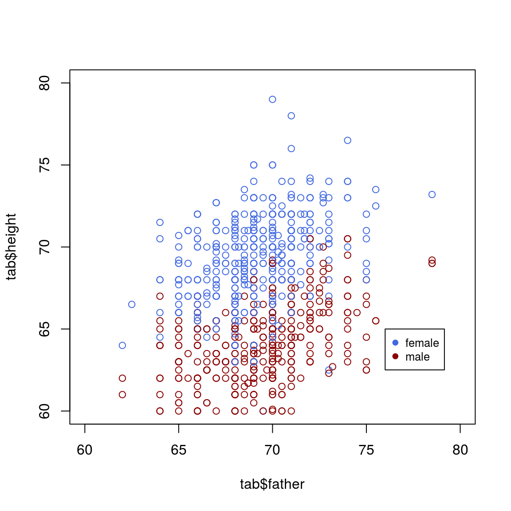

2 Plot in R
2.1 Read the data
Consider the data collected by Francis Galton in the 1880s, stored in a modern format in the galton.csv file. In this file, heights is the variable containing the child’s heights, while the father’s and mother’s height is contained in the variables father and mother. The family variable is a numerical code identifying children in the same family; the number of kids in this family is in nkids.
## Data from https://github.com/thomas-haslwanter/statsintro_python/blob/master/ISP/Code_Quantlets/08_TestsMeanValues/anovaOneway/galton.csv
tab<-read.csv("data/galton.csv")
head(tab)## family father mother sex height nkids
## 1 1 78.5 67.0 M 73.2 4
## 2 1 78.5 67.0 F 69.2 4
## 3 1 78.5 67.0 F 69.0 4
## 4 1 78.5 67.0 F 69.0 4
## 5 2 75.5 66.5 M 73.5 4
## 6 2 75.5 66.5 M 72.5 42.2 Line plot
2.3 Basic line plot
plot(tab$father, tab$height)
2.4 Color the dots based on the sex information
col_info = ifelse(tab$sex=="M", "royalblue", "darkred")
plot(tab$father, tab$height, col=col_info)col_info = ifelse(tab$sex=="M", "royalblue", "darkred")
plot(tab$father, tab$height, col=col_info, xlim=c(60, 80), ylim=c(60, 80))
legend(76, 65,pch=c(19,19),col=c("royalblue", "darkred"),c("female", "male"),bty="o",cex=.8)
2.5
meth_lev=read.table("data/global_meth_lev.tsv", header=TRUE)
meth_lev## Sample CG CHG CHH
## 1 cmt23 0.227 0.009 0.011
## 2 cmt2-3 0.229 0.062 0.010
## 3 drm12cmt23 0.221 0.004 0.005
## 4 drm12cmt2 0.222 0.059 0.005
## 5 WT 0.247 0.079 0.0292.6 Draw a circle in R
# initialize a plot
plot(c(-1, 1), c(-1, 1), type = "n")
# prepare "circle data"
radius <- 1
theta <- seq(0, 2 * pi, length = 200)
# draw the circle
lines(x = radius * cos(theta), y = radius * sin(theta))2.7 Network
2.7.1
##========================================================##
## ##
## Network Visualization with R ##
## Polnet 2018 Workshop, Washington, DC ##
## www.kateto.net/polnet2018 ##
## ##
## Katherine (Katya) Ognyanova ##
## Web: kateto.net | Email: katya@ognyanova.net ##
## GitHub: kateto | Twitter: @Ognyanova ##
## ##
##========================================================##
# ================ Introduction ================
# Download handouts and example data: bit.ly/polnet2018
# Online tutorial: kateto.net/polnet2018
# CONTENTS
#
# 1. Working with colors in R plots
# 2. Reading in the network data
# 3. Network plots in 'igraph'
# 4. Plotting two-mode networks
# 5. Plotting multiplex networks
# 6. Quick example using 'network'
# 7. Simple plot animations in R
# 8. Interactive JavaScript networks
# 9. Interactive and dynamic networks with ndtv-d3
# 10. Plotting networks on a geographic map
# KEY PACKAGES
# Install those now if you do not have the latest versions.
# (please do NOT load them yet!)
install.packages("igraph")
install.packages("network")
install.packages("sna")
install.packages("visNetwork")
install.packages("threejs")
install.packages("ndtv")
# OPTIONAL PACKAGES
# Install those if you would like to run through all of the
# examples below (those are not critical and can be skipped).
install.packages("RColorBrewer")
install.packages("png")
install.packages("networkD3")
install.packages("animation")
install.packages("maps")
install.packages("geosphere")
# ================ 1. Colors in R plots ================
# -------~~ Colors --------
# In most R functions, you can use named colors, hex, or rgb values:
plot(x=1:10, y=rep(5,10), pch=19, cex=5, col="dark red")
points(x=1:10, y=rep(6, 10), pch=19, cex=5, col="#557799")
points(x=1:10, y=rep(4, 10), pch=19, cex=5, col=rgb(.25, .5, .3))
# In the simple base plot chart above, x and y are point coordinates, 'pch'
# is the point symbol shape, 'cex' is the point size, and 'col' is the color.
# To see the parameters for plotting in base R, check out ?par
# Some key ones include "bg" for background color, 'cex' for scaling text size,
# 'mar' for plot margins, 'new' for plotting witout clearing the previous plot,
# 'mfcol' & 'mfrow' split plotting space into rows and columns for multiple plots
?par
# To close the current graphics device clearing the plot and plot parameters, use:
dev.off()
# If you plan on using the built-in color names, here's what they are:
colors() # all colors
grep("blue", colors(), value=T) # colors that have 'blue' in the name
# You may notice that rgb here ranges from 0 to 1. While this is the R default,
# you can also set it for the more typical 0-255 range:
rgb(10, 100, 100, maxColorValue=255)
# -------~~ Transparency --------
# We can also set the opacity/transparency using the parameter 'alpha' (range 0-1):
plot(x=1:5, y=rep(5,5), pch=19, cex=16, col=rgb(.25, .5, .3, alpha=.5), xlim=c(0,6))
# If we have a hex color representation, we can set the transparency alpha
# using 'adjustcolor' from package 'grDevices'. For fun, let's also set the
# the plot background to black using the par() function for graphical parameters.
# We could also set the margins in par() with mar=c(bottom, left, top, right).
par(bg="black")
col.tr <- grDevices::adjustcolor("#557799", alpha=0.7)
plot(x=1:5, y=rep(5,5), pch=19, cex=20, col=col.tr, xlim=c(0,6))
dev.off()
# -------~~ Palettes --------
# In many cases, we need a number of contrasting colors, or multiple shades of a color.
# R comes with some predefined palette function that can generate those for us.
pal1 <- heat.colors(5, alpha=1) # generate 5 colors from the heat palette, opaque
pal2 <- rainbow(5, alpha=.5) # generate 5 colors from the heat palette, semi-transparent
plot(x=1:10, y=1:10, pch=19, cex=10, col=pal1)
par(new=TRUE) # tells R not to clear the first plot before adding the second one
plot(x=10:1, y=1:10, pch=19, cex=10, col=pal2)
# We can also generate our own gradients using colorRampPalette().
# Note that colorRampPalette returns a FUNCTION that we can use
# to generate as many colors from that palette as we need.
palf <- colorRampPalette(c("gray70", "dark red", "orange"))
plot(x=10:1, y=1:10, pch=19, cex=10, col=palf(10))
# To add transparency to colorRampPalette, you need to add a parameter `alpha=TRUE`:
palf <- colorRampPalette(c(rgb(1,1,1, .2),rgb(.8,0,0, .7)), alpha=TRUE)
plot(x=10:1, y=1:10, pch=19, cex=10, col=palf(10))
# -------~~ ColorBrewer --------
# Finding good color combinations is a tough task - and the built-in R palettes
# are rather limited. Thankfully there are other available packages for this:
# install.packages("RColorBrewer")
library("RColorBrewer")
display.brewer.all()
# This package has one main function, called 'brewer.pal'.
# Using it, you just need to select the desired palette and a number of colors.
# Let's take a look at some of the RColorBrewer palettes:
display.brewer.pal(8, "Set3")
display.brewer.pal(8, "Spectral")
display.brewer.pal(8, "Blues")
# Plot figures using ColorBrewer
# We'll use par() to plot multiple figures.
# plot row by row: mfrow=c(number of rows, number of columns)
# plot column by column: mfcol=c(number of rows, number of columns)
par(mfrow=c(1,2)) # plot two figures - 1 row, 2 columns
pal3 <- brewer.pal(10, "Set3")
plot(x=10:1, y=10:1, pch=19, cex=6, col=pal3)
plot(x=10:1, y=10:1, pch=19, cex=6, col=rev(pal3)) # backwards
dev.off() # shut off the graphic device to clear the two-figure configuration.
detach("package:RColorBrewer")
# ================ 2. Reading network data into 'igraph' ================
# Download an archive with the data files from http://bit.ly/polnet2018
# Clear your workspace by removing all objects returned by ls():
rm(list = ls())
# Set the working directory to the folder containing the workshop files:
setwd("C:/polnet2018")
# If you don't know the path to the folder and you're in RStudio, go to the
# "Session" menu -> "Set Working Directory" -> "To Source File Location"
library("igraph")
# -------~~ DATASET 1: edgelist --------
# Read in the data:
nodes <- read.csv("./Data files/Dataset1-Media-Example-NODES.csv", header=T, as.is=T)
links <- read.csv("./Data files/Dataset1-Media-Example-EDGES.csv", header=T, as.is=T)
# Examine the data:
head(nodes)
head(links)
# Converting the data to an igraph object:
# The graph_from_data_frame() function takes two data frames: 'd' and 'vertices'.
# 'd' describes the edges of the network - it should start with two columns
# containing the source and target node IDs for each network tie.
# 'vertices' should start with a column of node IDs. It can be omitted.
# Any additional columns in either data frame are interpreted as attributes.
net <- graph_from_data_frame(d=links, vertices=nodes, directed=T)
# Examine the resulting object:
class(net)
net
# The description of an igraph object starts with four letters:
# D or U, for a directed or undirected graph
# N for a named graph (where nodes have a `name` attribute)
# W for a weighted graph (where edges have a `weight` attribute)
# B for a bipartite (two-mode) graph (where nodes have a `type` attribute)
# The two numbers that follow (17 49) refer to the number of nodes and edges in the graph.
# The description also lists node & edge attributes
# We can access the nodes, edges, and their attributes:
E(net)
V(net)
E(net)$type
V(net)$media
# Or find specific nodes and edges by attribute:
# (that returns objects of type vertex sequence / edge sequence)
V(net)[media=="BBC"]
E(net)[type=="mention"]
# If you need them, you can extract an edge list
# or a matrix back from the igraph networks.
as_edgelist(net, names=T)
as_adjacency_matrix(net, attr="weight")
# Or data frames describing nodes and edges:
as_data_frame(net, what="edges")
as_data_frame(net, what="vertices")
# You can also access the network matrix directly:
net[1,]
net[5,7]
# First attempt to plot the graph:
plot(net) # not pretty!
# Removing loops from the graph:
net <- simplify(net, remove.multiple = F, remove.loops = T)
# Let's and reduce the arrow size and remove the labels:
plot(net, edge.arrow.size=.4,vertex.label=NA)
# -------~~ DATASET 2: matrix --------
# Read in the data:
nodes2 <- read.csv("./Data files/Dataset2-Media-User-Example-NODES.csv", header=T, as.is=T)
links2 <- read.csv("./Data files/Dataset2-Media-User-Example-EDGES.csv", header=T, row.names=1)
# Examine the data:
head(nodes2)
head(links2)
# links2 is a matrix for a two-mode network:
links2 <- as.matrix(links2)
dim(links2)
dim(nodes2)
# Create an igraph network object from the two-mode matrix:
net2 <- graph_from_incidence_matrix(links2)
# To transform a one-mode network matrix into an igraph object,
# we would use graph_from_adjacency_matrix()
# A built-in vertex attribute 'type' shows which mode vertices belong to.
table(V(net2)$type)
plot(net2,vertex.label=NA)
# Examine the resulting object:
class(net2)
net2
# ================ 3. Network plots in 'igraph' ================
# ------~~ Plot parameters in igraph --------
# Check out the node options (starting with 'vertex.')
# and the edge options # (starting with 'edge.').
# A list of options is also included in your handout.
?igraph.plotting
# We can set the node & edge options in two ways - one is to specify
# them in the plot() function, as we are doing below.
# Plot with curved edges (edge.curved=.1) and reduce arrow size:
plot(net, edge.arrow.size=.4, edge.curved=.1)
# Set node color to orange and the border color to hex #555555
# Replace the vertex label with the node names stored in "media"
plot(net, edge.arrow.size=.2, edge.curved=0,
vertex.color="orange", vertex.frame.color="#555555",
vertex.label=V(net)$media, vertex.label.color="black",
vertex.label.cex=.7)
# The second way to set attributes is to add them to the igraph object.
# Generate colors based on media type:
colrs <- c("gray50", "tomato", "gold")
V(net)$color <- colrs[V(net)$media.type]
# Compute node degrees (#links) and use that to set node size:
deg <- degree(net, mode="all")
V(net)$size <- deg*3
# Alternatively, we can set node size based on audience size:
V(net)$size <- V(net)$audience.size*0.7
# The labels are currently node IDs.
# Setting them to NA will render no labels:
V(net)$label.color <- "black"
V(net)$label <- NA
# Set edge width based on weight:
E(net)$width <- E(net)$weight/6
#change arrow size and edge color:
E(net)$arrow.size <- .2
E(net)$edge.color <- "gray80"
# We can even set the network layout:
graph_attr(net, "layout") <- layout_with_lgl
plot(net)
# We can also override the attributes explicitly in the plot:
plot(net, edge.color="orange", vertex.color="gray50")
# We can also add a legend explaining the meaning of the colors we used:
plot(net)
legend(x=-1.1, y=-1.1, c("Newspaper","Television", "Online News"), pch=21,
col="#777777", pt.bg=colrs, pt.cex=2.5, bty="n", ncol=1)
# Sometimes, especially with semantic networks, we may be interested in
# plotting only the labels of the nodes:
plot(net, vertex.shape="none", vertex.label=V(net)$media,
vertex.label.font=2, vertex.label.color="gray40",
vertex.label.cex=.7, edge.color="gray85")
# Let's color the edges of the graph based on their source node color.
# We'll get the starting node for each edge with "ends()".
edge.start <- ends(net, es=E(net), names=F)[,1]
edge.col <- V(net)$color[edge.start]
plot(net, edge.color=edge.col, edge.curved=.4)
# -------~~ Network Layouts in 'igraph' --------
# Network layouts are algorithms that return coordinates for each
# node in a network.
# Let's generate a slightly larger 100-node graph using
# a preferential attachment model (Barabasi-Albert).
net.bg <- sample_pa(100, 1.2)
V(net.bg)$size <- 8
V(net.bg)$frame.color <- "white"
V(net.bg)$color <- "orange"
V(net.bg)$label <- ""
E(net.bg)$arrow.mode <- 0
plot(net.bg)
# Now let's plot this network using the layouts available in igraph.
# You can set the layout in the plot function:
plot(net.bg, layout=layout_randomly)
# Or calculate the vertex coordinates in advance:
l <- layout_in_circle(net.bg)
plot(net.bg, layout=l)
# l is simply a matrix of x,y coordinates (N x 2) for the N nodes in the graph.
# You can generate your own:
l
l <- cbind(1:vcount(net.bg), c(1, vcount(net.bg):2))
plot(net.bg, layout=l)
# This layout is just an example and not very helpful - thankfully
# 'igraph' has a number of built-in layouts, including:
# Randomly placed vertices
l <- layout_randomly(net.bg)
plot(net.bg, layout=l)
# Circle layout
l <- layout_in_circle(net.bg)
plot(net.bg, layout=l)
# 3D sphere layout
l <- layout_on_sphere(net.bg)
plot(net.bg, layout=l)
# The Fruchterman-Reingold force-directed algorithm
# Nice but slow, most often used in graphs smaller than ~1000 vertices.
l <- layout_with_fr(net.bg)
plot(net.bg, layout=l)
# You will also notice that the F-R layout is not deterministic - different
# runs will result in slightly different configurations. Saving the layout
# in l allows us to get the exact same result multiple times.
par(mfrow=c(2,2), mar=c(1,1,1,1))
plot(net.bg, layout=layout_with_fr)
plot(net.bg, layout=layout_with_fr)
plot(net.bg, layout=l)
plot(net.bg, layout=l)
dev.off()
# By default, the coordinates of the plots are rescaled to the [-1,1] interval
# for both x and y. You can change that with the parameter "rescale=FALSE"
# and rescale your plot manually by multiplying the coordinates by a scalar.
# You can use norm_coords to normalize the plot with the boundaries you want.
# This way you can create more compact or spread out layout versions.
# Get the layout coordinates:
l <- layout_with_fr(net.bg)
# Normalize them so that they are in the -1, 1 interval:
l <- norm_coords(l, ymin=-1, ymax=1, xmin=-1, xmax=1)
par(mfrow=c(2,2), mar=c(0,0,0,0))
plot(net.bg, rescale=F, layout=l*0.4)
plot(net.bg, rescale=F, layout=l*0.8)
plot(net.bg, rescale=F, layout=l*1.2)
plot(net.bg, rescale=F, layout=l*1.6)
dev.off()
# Another popular force-directed algorithm that produces nice results for
# connected graphs is Kamada Kawai. Like Fruchterman Reingold, it attempts to
# minimize the energy in a spring system.
l <- layout_with_kk(net.bg)
plot(net.bg, layout=l)
#The MDS (multidimensional scaling) algorithm tries to place nodes based on some
# measure of similarity or distance between them. More similar/less distant nodes are
# placed closer to each other. By default, the measure used is based on the shortest
#paths between nodes in the network. That can be changed with the 'dist' parameter.
plot(net.bg, layout=layout_with_mds)
# The LGL algorithm is for large connected graphs. Here you can specify a root -
# the node that will be placed in the middle of the layout.
plot(net.bg, layout=layout_with_lgl)
# By default, igraph uses a layout called 'layout_nicely' which selects
# an appropriate layout algorithm based on the properties of the graph.
# Check out all available layouts in igraph:
?igraph::layout_
layouts <- grep("^layout_", ls("package:igraph"), value=TRUE)[-1]
# Remove layouts that do not apply to our graph.
layouts <- layouts[!grepl("bipartite|merge|norm|sugiyama|tree", layouts)]
par(mfrow=c(3,3), mar=c(1,1,1,1))
for (layout in layouts) {
print(layout)
l <- do.call(layout, list(net))
plot(net, edge.arrow.mode=0, layout=l, main=layout) }
dev.off()
# -------~~ Highlighting aspects of the network --------
plot(net)
# Notice that our network plot is still not too helpful.
# We can identify the type and size of nodes, but cannot see
# much about the structure since the links we're examining are so dense.
# One way to approach this is to see if we can sparsify the network.
hist(links$weight)
mean(links$weight)
sd(links$weight)
# There are more sophisticated ways to extract the key edges,
# but for the purposes of this exercise we'll only keep ones
# that have weight higher than the mean for the network.
# We can delete edges using delete_edges(net, edges)
# (or, by the way, add edges with add_edges(net, edges) )
cut.off <- mean(links$weight)
net.sp <- delete_edges(net, E(net)[weight<cut.off])
plot(net.sp, layout=layout_with_kk)
# Another way to think about this is to plot the two tie types
# (hyperlinks and mentions) separately. We will do that in
# section 5 of this tutorial: Plotting multiplex networks.
# We can also try to make the network map more useful by
# showing the communities within it.
# Community detection (by optimizing modularity over partitions):
clp <- cluster_optimal(net)
class(clp)
clp$membership
# Community detection returns an object of class "communities"
# which igraph knows how to plot:
plot(clp, net)
# We can also plot the communities without relying on their built-in plot:
V(net)$community <- clp$membership
colrs <- adjustcolor( c("gray50", "tomato", "gold", "yellowgreen"), alpha=.6)
plot(net, vertex.color=colrs[V(net)$community])
# -------~~ Highlighting specific nodes or links --------
# Sometimes we want to focus the visualization on a particular node
# or a group of nodes. Let's represent distance from the NYT:
# distances() calculates shortest parth from vertices in 'v' to ones in 'to'.
dist.from.NYT <- distances(net, v=V(net)[media=="NY Times"], to=V(net), weights=NA)
# Set colors to plot the distances:
oranges <- colorRampPalette(c("dark red", "gold"))
col <- oranges(max(dist.from.NYT)+1)
col <- col[dist.from.NYT+1]
plot(net, vertex.label=dist.from.NYT,
vertex.color=col, vertex.label.color="white")
# Or, a bit more readable:
plot(net, vertex.color=col, vertex.label=dist.from.NYT, edge.arrow.size=.6,
vertex.label.color="white", vertex.size=V(net)$size*1.6, edge.width=2,
layout=norm_coords(layout_with_lgl(net))*1.4, rescale=F)
# We can also highlight paths between the nodes in the network.
# Say here between MSNBC and the New York Post:
news.path <- shortest_paths(net,
from = V(net)[media=="MSNBC"],
to = V(net)[media=="New York Post"],
output = "both") # both path nodes and edges
# Generate edge color variable to plot the path:
ecol <- rep("gray80", ecount(net))
ecol[unlist(news.path$epath)] <- "orange"
# Generate edge width variable to plot the path:
ew <- rep(2, ecount(net))
ew[unlist(news.path$epath)] <- 4
# Generate node color variable to plot the path:
vcol <- rep("gray40", vcount(net))
vcol[unlist(news.path$vpath)] <- "gold"
plot(net, vertex.color=vcol, edge.color=ecol,
edge.width=ew, edge.arrow.mode=0)
# Highlight the edges going into or out of a vertex, for instance the WSJ.
# For a single node, use 'incident()', for multiple nodes use 'incident_edges()'
inc.edges <- incident(net, V(net)[media=="Wall Street Journal"], mode="all")
# Set colors to plot the selected edges.
ecol <- rep("gray80", ecount(net))
ecol[inc.edges] <- "orange"
vcol <- rep("grey40", vcount(net))
vcol[V(net)$media=="Wall Street Journal"] <- "gold"
plot(net, vertex.color=vcol, edge.color=ecol, edge.width=2)
# Or we can highlight the immediate neighbors of a vertex, say WSJ.
# The 'neighbors' function finds all nodes one step out from the focal actor.
# To find the neighbors for multiple nodes, use 'adjacent_vertices()'.
# To find node neighborhoods going more than one step out, use function 'ego()'
# with parameter 'order' set to the number of steps out to go from the focal node(s).
neigh.nodes <- neighbors(net, V(net)[media=="Wall Street Journal"], mode="out")
# Set colors to plot the neighbors:
vcol[neigh.nodes] <- "#ff9d00"
plot(net, vertex.color=vcol)
# Another way to draw attention to a group of nodes:
# (This is generally not recommended since, depending on layout, nodes
# that are not 'marked' can accidentally get placed on top of the mark)
plot(net, mark.groups=c(1,4,5,8), mark.col="#C5E5E7", mark.border=NA)
# Mark multiple groups:
plot(net, mark.groups=list(c(1,4,5,8), c(15:17)),
mark.col=c("#C5E5E7","#ECD89A"), mark.border=NA)
# -------~~ Interactive plotting with 'tkplot' --------
# R and igraph offer interactive plotting capabilities
# (mostly helpful for small networks)
tkid <- tkplot(net) #tkid is the id of the tkplot
l <- tkplot.getcoords(tkid) # grab the coordinates from tkplot
plot(net, layout=l)
# -------~~ Other ways to represent a network --------
# One reminder that there are other ways to represent a network:
# Heatmap of the network matrix:
netm <- as_adjacency_matrix(net, attr="weight", sparse=F)
colnames(netm) <- V(net)$media
rownames(netm) <- V(net)$media
palf <- colorRampPalette(c("gold", "dark orange"))
# The Rowv & Colv parameters turn dendrograms on and off
heatmap(netm[,17:1], Rowv = NA, Colv = NA, col = palf(20),
scale="none", margins=c(10,10) )
# Degree distribution
deg.dist <- degree_distribution(net, cumulative=T, mode="all")
plot( x=0:max(degree(net)), y=1-deg.dist, pch=19, cex=1.4, col="orange",
xlab="Degree", ylab="Cumulative Frequency")
# ================ 4. Plotting two-mode networks ================
head(nodes2)
head(links2)
net2
plot(net2)
# This time we will make nodes look different based on their type.
# Media outlets are blue squares, audience nodes are orange circles:
V(net2)$color <- c("steel blue", "orange")[V(net2)$type+1]
V(net2)$shape <- c("square", "circle")[V(net2)$type+1]
# Media outlets will have name labels, audience members will not:
V(net2)$label <- ""
V(net2)$label[V(net2)$type==F] <- nodes2$media[V(net2)$type==F]
V(net2)$label.cex=.6
V(net2)$label.font=2
plot(net2, vertex.label.color="white", vertex.size=(2-V(net2)$type)*8)
# igraph has a built-in bipartite layout, though it's not the most helpful:
plot(net2, vertex.label=NA, vertex.size=7, layout=layout_as_bipartite)
# Using text as nodes:
par(mar=c(0,0,0,0))
plot(net2, vertex.shape="none", vertex.label=nodes2$media,
vertex.label.color=V(net2)$color, vertex.label.font=2,
vertex.label.cex=.95, edge.color="gray70", edge.width=2)
dev.off()
# Using images as nodes
# You will need the 'png' package to do this:
# install.packages("png")
library("png")
img.1 <- readPNG("./Data files/images/news.png")
img.2 <- readPNG("./Data files/images/user.png")
V(net2)$raster <- list(img.1, img.2)[V(net2)$type+1]
par(mar=c(3,3,3,3))
plot(net2, vertex.shape="raster", vertex.label=NA,
vertex.size=16, vertex.size2=16, edge.width=2)
# By the way, you can also add any image you want to any plot.
# For example, many network graphs could be improved by a photo
# of a puppy carrying a basket full of kittens.
img.3 <- readPNG("./Data files/images/puppy.png")
rasterImage(img.3, xleft=-1.7, xright=0, ybottom=-1.2, ytop=0)
# The numbers after the image are coordinates for the plot.
# The limits of your plotting area are given in par()$usr
dev.off()
detach("package:png")
# We can also generate and plot bipartite projections for the two-mode network:
# (co-memberships are easy to calculate by multiplying the network matrix by
# its transposed matrix, or using igraph's bipartite.projection function)
net2.bp <- bipartite.projection(net2)
# We can calculate the projections manually as well:
# as_incidence_matrix(net2) %*% t(as_incidence_matrix(net2))
# t(as_incidence_matrix(net2)) %*% as_incidence_matrix(net2)
par(mfrow=c(1,2))
plot(net2.bp$proj1, vertex.label.color="black", vertex.label.dist=2,
vertex.label=nodes2$media[!is.na(nodes2$media.type)])
plot(net2.bp$proj2, vertex.label.color="black", vertex.label.dist=2,
vertex.label=nodes2$media[ is.na(nodes2$media.type)])
dev.off()
# PSA: Remember to detach packages when you are done with them!
# You may run into problems if you have igraph and Statnet packages loaded together.
detach("package:igraph")
# ================ 5. Plotting multiplex networks ================
# In some cases, the networks we want to plot are multigraphs:
# they can have multiple edges connecting the same two nodes.
#
# A related concept, multiplex networks, contain multiple types of ties
# -- e.g. friendship, romantic, and work relationships between individuals.
# In our example network, we also have two tie types: hyperlinks and mentions.
# One thing we can do is plot each type of tie separately:
library("igraph")
E(net)$width <- 2
plot(net, edge.color=c("dark red", "slategrey")[(E(net)$type=="hyperlink")+1],
vertex.color="gray40", layout=layout_in_circle, edge.curved=.3)
# Another way to delete edges using the minus operator:
net.m <- net - E(net)[E(net)$type=="hyperlink"]
net.h <- net - E(net)[E(net)$type=="mention"]
# Plot the two links separately:
par(mfrow=c(1,2))
plot(net.h, vertex.color="orange", layout=layout_with_fr, main="Tie: Hyperlink")
plot(net.m, vertex.color="lightsteelblue2", layout=layout_with_fr, main="Tie: Mention")
dev.off()
# Make sure the nodes stay in the same place in both plots:
par(mfrow=c(1,2),mar=c(1,1,4,1))
l <- layout_with_fr(net)
plot(net.h, vertex.color="orange", layout=l, main="Tie: Hyperlink")
plot(net.m, vertex.color="lightsteelblue2", layout=l, main="Tie: Mention")
dev.off()
# In our example network, we don't have node dyads connected by multiple
# types of connections (we never have both a 'hyperlink' and a 'mention'
# tie between the same two news outlets) -- however that could happen.
# One challenge in visualizing multiplex networks is that multiple
# edges between the same two nodes may get plotted on top of each
# other in a way that makes them impossible to distinguish.
# For example, let us generate a simple multiplex network with
# two nodes and three ties between them:
multigtr <- graph( edges=c(1,2, 1,2, 1,2), n=2 )
l <- layout_with_kk(multigtr)
# Let's just plot the graph:
plot(multigtr, vertex.color="lightsteelblue", vertex.frame.color="white",
vertex.size=40, vertex.shape="circle", vertex.label=NA,
edge.color=c("gold", "tomato", "yellowgreen"), edge.width=10,
edge.arrow.size=5, edge.curved=0.1, layout=l)
# Because all edges in the graph have the same curvature, they are drawn
# over each other so that we only see the last one. What we can do is
# assign each edge a different curvature. One useful function in 'igraph'
# called curve_multiple() can help us here. For a graph G, curve.multiple(G)
# will generate a curvature for each edge that maximizes visibility.
plot(multigtr, vertex.color="lightsteelblue", vertex.frame.color="white",
vertex.size=40, vertex.shape="circle", vertex.label=NA,
edge.color=c("gold", "tomato", "yellowgreen"), edge.width=10,
edge.arrow.size=5, edge.curved=curve_multiple(multigtr), layout=l)
dev.off()
detach("package:igraph")
# ================ 6. Quick example using the 'network' package ================
# Plotting with the 'network' package is very similar to that with 'igraph' -
# although the notation is slightly different (a whole new set of parameter names!)
# Here is a quick example using the (by now very familiar) media network.
#Just in case we have forgotten this earlier:
dev.off()
detach("package:igraph")
# Load our main package:
library("network")
# Wait, what did our data look like?
head(links)
head(nodes)
# Convert the data into the network format used by the Statnet family.
# As in igraph, we can generate a 'network' object from an edgelist,
# an adjacency matrix, or an incidence matrix.
?edgeset.constructors
# Remember to set the 'ignore.eval' to F for weighted networks.
# We would need to set 'multile' to T if we wanted to allow multiplex edges.
net3 <- network(links, vertex.attr=nodes, matrix.type="edgelist",
loops=F, multiple=F, ignore.eval = F)
net3
# You can access the edges, vertices, and the network matrix using:
net3[,]
net3 %n% "net.name" <- "Media Network" # network attribute
net3 %v% "media" # Node attribute
net3 %e% "type" # Edge attribute
net3 %v% "col" <- c("gray70", "tomato", "gold")[net3 %v% "media.type"]
# plot the network:
plot(net3, vertex.cex=(net3 %v% "audience.size")/7, vertex.col="col")
# For a full list of parameters that you can use in this plot,
# check out ?plot.network.
?plot.network
# Note that - as in igraph - the plot returns the node position coordinates.
l <- plot(net3, vertex.cex=(net3 %v% "audience.size")/7, vertex.col="col")
plot(net3, vertex.cex=(net3 %v% "audience.size")/7, vertex.col="col", coord=l)
# The network package also offers the option to edit a plot interactively,
# by setting the parameter interactive=T
plot(net3, vertex.cex=(net3 %v% "audience.size")/7, vertex.col="col", interactive=T)
detach("package:network")
# ================ 7. Simple plot animations in R ================
# If you have already installed "ndtv", you should also have
# a package used by it called "animation".
# install.packages("animation")
library("animation")
library("igraph")
# In order for this to work, you need not only the R package, but also
# an additional software called ImageMagick from imagemagick.org
# If you don't already have it, skip this part of the tutorial for now.
ani.options("convert") # Check that the package knows where to find ImageMagick
ani.options(convert="C:/Progra~1/ImageMagick-7.0.6-Q16/convert.exe")
# You can use this technique to create various (not necessarily network-related)
# animations in R by generating multiple plots and combining them in an animated GIF.
l <- layout_with_lgl(net)
saveGIF( { col <- rep("grey40", vcount(net))
plot(net, vertex.color=col, layout=l)
step.1 <- V(net)[media=="Wall Street Journal"]
col[step.1] <- "#ff5100"
plot(net, vertex.color=col, layout=l)
step.2 <- unlist(neighborhood(net, 1, step.1, mode="out"))
col[setdiff(step.2, step.1)] <- "#ff9d00"
plot(net, vertex.color=col, layout=l)
step.3 <- unlist(neighborhood(net, 2, step.1, mode="out"))
col[setdiff(step.3, step.2)] <- "#FFDD1F"
plot(net, vertex.color=col, layout=l) },
interval = .8, movie.name="network_animation.gif" )
detach("package:igraph")
detach("package:animation")
# ================ 8. Interactive JavaScript networks ================
# There are a number of libraries like 'rcharts' and 'htmlwidgets' that can help you
# export interactive web charts from R. We'll take a quick look at three packages that
# can export networks from R to JavaScript: : 'visNetwork' and 'threejs', and 'networkD3'
# -------~~ Interactive networks with visNetwork --------
# install.packages("visNetwork")
library("visNetwork")
head(nodes)
head(links)
# We can visualize the network right away - visNetwork() will accept
# our node and link data frames (it needs node data with an 'id' column,
# and edge data with 'from' and 'to' columns).
visNetwork(nodes, links)
# We can set the height and width of the visNetwork() window
# with parameters 'height' and 'width', the back color with 'background',
# the title, subtitle, and footer with 'main', 'submain', and 'footer'
visNetwork(nodes, links, height="300px", width="100%", background="#eeefff",
main="Network", submain="And what a great network it is!",
footer= "Hyperlinks and mentions among media sources")
# Like 'igraph' did, 'visNetwork' allows us to set graphic properties
# as node or edge attributes directly in the data or through a function.
# Check out the available options with:
?visNodes
?visEdges
# We'll start by adding new node and edge attributes to our dataframes.
# We'll leave our original data alone and create two new data frames:
vis.nodes <- nodes
vis.links <- links
# The options for node shape include 'ellipse', 'circle',
# 'database', 'box', 'text', 'image', 'circularImage', 'diamond',
# 'dot', 'star', 'triangle', 'triangleDown', 'square', and 'icon'
vis.nodes$shape <- "dot"
vis.nodes$shadow <- TRUE # Nodes will drop shadow
vis.nodes$title <- vis.nodes$media # Text on click
vis.nodes$label <- vis.nodes$type.label # Node label
vis.nodes$size <- vis.nodes$audience.size # Node size
vis.nodes$borderWidth <- 2 # Node border width
# We can set the color for several elements of the nodes:
# "background" changes the node color, "border" changes the frame color;
# "highlight" sets the color on click, "hover" sets the color on mouseover.
vis.nodes$color.background <- c("slategrey", "tomato", "gold")[nodes$media.type]
vis.nodes$color.border <- "black"
vis.nodes$color.highlight.background <- "orange"
vis.nodes$color.highlight.border <- "darkred"
visNetwork(vis.nodes, vis.links)
# Below we change some of the visual properties of the edges:
vis.links$width <- 1+links$weight/8 # line width
vis.links$color <- "gray" # line color
vis.links$arrows <- "middle" # arrows: 'from', 'to', or 'middle'
vis.links$smooth <- FALSE # should the edges be curved?
vis.links$shadow <- FALSE # edge shadow
visNetwork(vis.nodes, vis.links)
# Remove the arrows and set the edge width to 1:
vis.links$arrows <- ""
vis.links$width <- 1
visnet <- visNetwork(vis.nodes, vis.links)
visnet
# We can also set the visualization options directly with visNodes() and visEdges()
visnet2 <- visNetwork(nodes, links)
visnet2 <- visNodes(visnet2, shape = "square", shadow = TRUE,
color=list(background="gray", highlight="orange", border="black"))
visnet2 <- visEdges(visnet2, color=list(color="black", highlight = "orange"),
smooth = FALSE, width=2, dashes= TRUE, arrows = 'middle' )
visnet2
# 'visNetwork' offers a number of options, including highlighting the neighbors
# of a selected node, or adding a drop-down menu to select a subset of nodes.
# The subset is based on a column from our data - here the type label.
visOptions(visnet, highlightNearest = TRUE, selectedBy = "type.label")
# 'visNetwork' can also work with predefined groups of nodes.
# Visual characteristics for each group can be set with visGroups().
nodes$group <- nodes$type.label
visnet3 <- visNetwork(nodes, links)
visnet3 <- visGroups(visnet3, groupname = "Newspaper", shape = "square",
color = list(background = "gray", border="black"))
visnet3 <- visGroups(visnet3, groupname = "TV", shape = "dot",
color = list(background = "tomato", border="black"))
visnet3 <- visGroups(visnet3, groupname = "Online", shape = "diamond",
color = list(background = "orange", border="black"))
visLegend(visnet3, main="Legend", position="right", ncol=1)
# For more information, check out:
?visOptions # available options
?visLayout # available layouts
?visGroups # using node groups
?visLegend # adding a legend
detach("package:visNetwork")
# -------~~ Interactive networks with threejs --------
# Another package exporting networks from R to a js library is 'threejs'
# The nice thing about it is that it can read igraph objects.
# install.packages("threejs")
# If you get errors or warnings using this library and the latest R version,
# try installing the development version of the 'htmlwidgets' package
# devtools::install_github("ramnathv/htmlwidgets")
library("threejs")
library("htmlwidgets")
library("igraph")
# The main network plotting function - graphjs() will take an igraph object.
# We could use our initial 'net' object with a slight modification - we will
# delete its graph layout and let 'threejs' generate its own layout.
# (We cheated a bit by assigning a function to the layout attribute above
# rather than giving it a table of node coordinates. This is fine by 'igraph',
# but 'threejs' will not let us do it.
net.js <- net
graph_attr(net.js, "layout") <- NULL
# Note that RStudio for Windows may not render the 'threejs' graphics properly.
# We will save the output in an HTML file and open it in a browser.
# Some of the parameters that we can add include 'main' for the plot title;
# 'curvature' for the edge curvature; 'bg' for background color;
# 'showLabels' to set labels to visible (TRUE) or not (FALSE);
# 'attraction' and 'repulsion' to set how much nodes attract and repulse
# each other; 'opacity' for node transparency (0 to 1); 'stroke' to indicate
# whether nodes should be framed in a black circle (TRUE) or not (FALSE), etc.
# For the full list of parameters, check out ?graphjs
gjs <- graphjs(net.js, main="Network!", bg="gray10", showLabels=F, stroke=F,
curvature=0.1, attraction=0.9, repulsion=0.8, opacity=0.9)
print(gjs)
saveWidget(gjs, file="Media-Network-gjs.html")
browseURL("Media-Network-gjs.html")
# Once we open the resulting visualization in the browser, we can use the mouse to
# control it: scrollwheel to zoom in and out, the left mouse button to rotate
# the network, and the right mouse button to pan.
# We can also create simple animations with 'threejs' by using lists of
# layouts, vertex colors, and edge colors that will switch at each step.
gjs.an <- graphjs(net.js, bg="gray10", showLabels=F, stroke=F,
layout=list(layout_randomly(net.js, dim=3),
layout_with_fr(net.js, dim=3),
layout_with_drl(net.js, dim=3),
layout_on_sphere(net.js)),
vertex.color=list(V(net.js)$color, "gray", "orange", V(net.js)$color),
main=list("Random Layout", "Fruchterman-Reingold", "DrL layout", "Sphere" ) )
print(gjs.an)
saveWidget(gjs.an, file="Media-Network-gjs-an.html")
browseURL("Media-Network-gjs-an.html")
# Another example is the 'Les Miserables' network included with the package:
data(LeMis)
lemis.net <- graphjs(LeMis, main="Les Miserables", showLabels=T)
print(lemis.net)
saveWidget(lemis.net, file="LeMis-Network-gjs.html")
browseURL("LeMis-Network-gjs.html")
detach("package:igraph")
detach("package:threejs")
detach("package:htmlwidgets")
# -------~~ Interactive Networks with networkD3 --------
# Another package using JavaScript to export networks: networkD3
# install.packages("networkD3")
library("networkD3")
# d3ForceNetwork expects node IDs that are numeric and start from 0
# so we have to transform our character node IDs:
links.d3 <- data.frame(from=as.numeric(factor(links$from))-1,
to=as.numeric(factor(links$to))-1 )
# The nodes need to be in the same order as the "source" column in links:
nodes.d3 <- cbind(idn=factor(nodes$media, levels=nodes$media), nodes)
# The `Group` parameter is used to color the nodes.
# Nodesize is not (as you might think) the size of the node, but the
# number of the column in the node data that should be used for sizing.
# The `charge` parameter guides node repulsion (if negative) or
# attraction (if positive).
forceNetwork(Links = links.d3, Nodes = nodes.d3, Source="from", Target="to",
NodeID = "idn", Group = "type.label",linkWidth = 1,
linkColour = "#afafaf", fontSize=12, zoom=T, legend=T,
Nodesize=6, opacity = 1, charge=-600,
width = 600, height = 600)
detach("package:networkD3")
# ================ 9. Interactive and dynamic networks with ndtv-d3 ================
# -------~~ Interactive network plots --------
# install.packages("ndtv", dependencies=T)
library("ndtv")
# You should not need additional software to produce web animations with 'ndtv' (below).
# If you want to save the animations as video files ( see ?saveVideo), you have to
# install a video converter called FFmpeg (ffmpg.org). To find out how to get the right
# installation for your OS, check out ?install.ffmpeg To use all available layouts,
# you need to have Java installed on your machine.
# Remember net3, our original media network turned into a 'network' object:
net3
# Let's create an interactive (but not yet dynamic!) visualization of net3.
# You will recognize a lot of the plotting parameters from 'network':
# Two new parameters set the tooltips (the popup labels you see when you
# click on network elements); note that those can take html format.
# 'launchBrowser=T' will open file 'filename' in your default browser.
render.d3movie(net3, usearrows = F, displaylabels = F, bg="#111111",
vertex.border="#ffffff", vertex.col = net3 %v% "col",
vertex.cex = (net3 %v% "audience.size")/8,
edge.lwd = (net3 %e% "weight")/3, edge.col = '#55555599',
vertex.tooltip = paste("<b>Name:</b>", (net3 %v% 'media') , "<br>",
"<b>Type:</b>", (net3 %v% 'type.label')),
edge.tooltip = paste("<b>Edge type:</b>", (net3 %e% 'type'), "<br>",
"<b>Edge weight:</b>", (net3 %e% 'weight' ) ),
launchBrowser=T, filename="Media-Network.html" )
# If you are going to embed this in a markdown document,
# you would also need to add output.mode='inline' above.
# -------~~ Network evolution animations --------
# In order to work with the network animations in 'ndtv',
# we need to understand the dynamic network format used by
# Statnet packages, implemented in 'networkDynamic'. It can
# represent discrete or continuous longitudinal network structures.
# Let's look at one of the example datasets included in the
# package, containing simulation data based on the network of
# business connections among Renaissance Florentine families:
data(short.stergm.sim)
short.stergm.sim
head(as.data.frame(short.stergm.sim))
# Here, an edge starts from a node with ID in `tail` and goes to one with ID in `head`.
# Edges exist from time point `onset` to time point `terminus`.
# There may be multiple periods (*activity spells*) where an edge is present.
# Each of those periods is recorded on a separate row in the data frame.
# With dynamic data, we can use 'network.extract()' to get a network
# that only contains elements active at a given point/time interval.
# Plot the network ignoring time (all nodes & edges that were ever present):
plot(short.stergm.sim)
# Plot the network at time 1 (at=1):
plot( network.extract(short.stergm.sim, at=1) )
# Plot nodes & edges active for the entire period (`rule=all`) from 1 to 5:
plot( network.extract(short.stergm.sim, onset=1, terminus=5, rule="all") )
#Plot nodes & edges active at any point (`rule=any`) between 1 and 10:
plot( network.extract(short.stergm.sim, onset=1, terminus=10, rule="any") )
# Let's make a quick d3 animation from the example network:
render.d3movie(short.stergm.sim,displaylabels=TRUE)
# Next, we will create and animate our own dynamic network.
# Dynamic network object can be generated in a number of ways: from
# a set of networks/matrices representing different time points, or from
# data frames/matrices with node lists and edge lists indicating when each
# is active, or when they switch state. See ?networkDynamic for more information.
net3
plot(net3)
vs <- data.frame(onset=0, terminus=50, vertex.id=1:17)
es <- data.frame(onset=1:49, terminus=50,
head=as.matrix(net3, matrix.type="edgelist")[,1],
tail=as.matrix(net3, matrix.type="edgelist")[,2])
head(vs)
head(es)
# Combine our base network with the edge and node longitudinal data:
net3.dyn <- networkDynamic(base.net=net3, edge.spells=es, vertex.spells=vs)
# Plot the network (all elements present at any time point):
plot(net3.dyn, vertex.cex=(net3 %v% "audience.size")/7, vertex.col="col")
# Plot static images showing network evolution:
compute.animation(net3.dyn, animation.mode = "kamadakawai",
slice.par=list(start=0, end=49, interval=10,
aggregate.dur=10, rule='any'))
# Show time evolution through static images at different time points:
filmstrip(net3.dyn, displaylabels=F, mfrow=c(2, 3),
slice.par=list(start=0, end=49, interval=10,
aggregate.dur=10, rule='any'))
# We can pre-compute the animation coordinates (otherwise they get calculated when
# you generate the animation). Here 'animation.mode' is the layout algorithm -
# one of "kamadakawai", "MDSJ", "Graphviz"and "useAttribute" (user-generated).
# Here 'slice.par' is a list of parameters controlling how the network visualization
# moves through time. The parameter 'interval' is the time step between layouts,
# 'aggregate.dur' is the period shown in each layout, 'rule' is the rule for
# displaying elements (e.g. 'any': active at any point during that period,
# 'all': active during the entire period, etc.)
# Let's make an actual animation:
compute.animation(net3.dyn, animation.mode = "kamadakawai",
slice.par=list(start=0, end=50, interval=1,
aggregate.dur=1, rule='any'))
render.d3movie(net3.dyn, usearrows = F,
displaylabels = F, label=net3 %v% "media",
bg="#ffffff", vertex.border="#333333",
vertex.cex = degree(net3)/2,
vertex.col = net3.dyn %v% "col",
edge.lwd = (net3.dyn %e% "weight")/3,
edge.col = '#55555599',
vertex.tooltip = paste("<b>Name:</b>", (net3.dyn %v% "media") , "<br>",
"<b>Type:</b>", (net3.dyn %v% "type.label") ),
edge.tooltip = paste("<b>Edge type:</b>", (net3.dyn %e% "type"), "<br>",
"<b>Edge weight:</b>", (net3.dyn %e% "weight" ) ),
launchBrowser=T, filename="Media-Network-Dynamic.html",
render.par=list(tween.frames = 30, show.time = F),
plot.par=list(mar=c(0,0,0,0)) )
# In addition to dynamic nodes and edges, 'ndtv' takes dynamic attributes.
# We could have added those to the 'es' and 'vs' data frames above.
# However, the plotting function can also evaluate parameters
# and generate dynamic arguments on the fly. For example,
# function(slice) { do some calculations with slice } will perform operations
# on the current time slice network, letting us change parameters dynamically.
# See the node size below:
compute.animation(net3.dyn, animation.mode = "kamadakawai",
slice.par=list(start=0, end=50, interval=4,
aggregate.dur=1, rule='any'))
render.d3movie(net3.dyn, usearrows = F,
displaylabels = F, label=net3 %v% "media",
bg="#000000", vertex.border="#dddddd",
vertex.cex = function(slice){ degree(slice)/2.5 },
vertex.col = net3.dyn %v% "col",
edge.lwd = (net3.dyn %e% "weight")/3,
edge.col = '#55555599',
vertex.tooltip = paste("<b>Name:</b>", (net3.dyn %v% "media") , "<br>",
"<b>Type:</b>", (net3.dyn %v% "type.label") ),
edge.tooltip = paste("<b>Edge type:</b>", (net3.dyn %e% "type"), "<br>",
"<b>Edge weight:</b>", (net3.dyn %e% "weight" ) ),
launchBrowser=T, filename="Media-Network-even-more-Dynamic.html",
render.par=list(tween.frames = 25, show.time = F) )
detach("package:ndtv")
detach("package:sna")
detach("package:networkDynamic")
detach("package:network")
# ================ 10. Plotting networks on a geographic map ================
# The example below plots a network on a map using base R and mapping libraries.
# Note that for those familiar with it, the package 'ggplot2' may provide
# a more flexible way of doing this. Things there work similarly to below,
# but you would use borders() to plot the map and geom_path() for the edges.
rm(list = ls()) # clear the workspace
# In order to plot on a map, we'll need two additional packages.
# If you do not already have them, install those now:
# install.packages("maps")
# install.packages("geosphere")
library("maps")
library("geosphere")
# Package 'maps' has built-in maps it can plot for you. For example:
# ('col' is map fill, 'border' is border color, 'bg' is background color)
par(mfrow = c(2,2))
map("usa", col="tomato", border="gray10", fill=TRUE, bg="gray30")
map("state", col="orange", border="gray10", fill=TRUE, bg="gray30")
map("county", col="palegreen", border="gray10", fill=TRUE, bg="gray30")
map("world", col="skyblue", border="gray10", fill=TRUE, bg="gray30")
dev.off()
# The data we will use contains US airports and flights among them.
# The airport file includes info about latitude and longitude.
# If we did not have those, we could use 'geocode()' from 'ggmap'
# to get latitude and longitude for an address.
airports <- read.csv("./Data Files/Dataset3-Airlines-NODES.csv", header=TRUE)
flights <- read.csv("./Data Files/Dataset3-Airlines-EDGES.csv", header=TRUE, as.is=TRUE)
head(flights)
head(airports)
# Select only large airports: ones with more than 10 connections in the data.
tab <- table(flights$Source)
big.id <- names(tab)[tab>10]
airports <- airports[airports$ID %in% big.id,]
flights <- flights[flights$Source %in% big.id &
flights$Target %in% big.id, ]
# Plot a map of the united states:
map("state", col="grey20", fill=TRUE, bg="black", lwd=0.1)
# Add a point on the map for each airport:
points(x=airports$longitude, y=airports$latitude, pch=19,
cex=airports$Visits/80, col="orange")
# Generate edge colors: lighter color means higher flight volume.
col.1 <- adjustcolor("orange red", alpha=0.4)
col.2 <- adjustcolor("orange", alpha=0.4)
edge.pal <- colorRampPalette(c(col.1, col.2), alpha = TRUE)
edge.col <- edge.pal(100)
# For each flight, we will generate the coordinates of an arc that connects
# its star and end point, using gcIntermediate() from package 'geosphere'.
# Then we will plot that arc over the map using lines().
for(i in 1:nrow(flights)) {
node1 <- airports[airports$ID == flights[i,]$Source,]
node2 <- airports[airports$ID == flights[i,]$Target,]
arc <- gcIntermediate( c(node1[1,]$longitude, node1[1,]$latitude),
c(node2[1,]$longitude, node2[1,]$latitude),
n=1000, addStartEnd=TRUE )
edge.ind <- round(100*flights[i,]$Freq / max(flights$Freq))
lines(arc, col=edge.col[edge.ind], lwd=edge.ind/30)
}
# ================ |-------------| ================
2.7.1.1 Reference
Network visualization with R: http://www.kateto.net/polnet2018